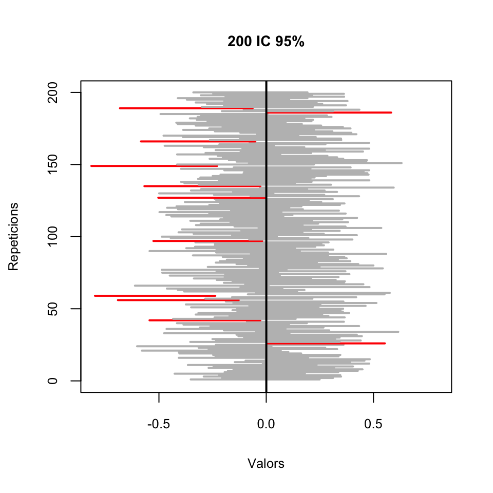
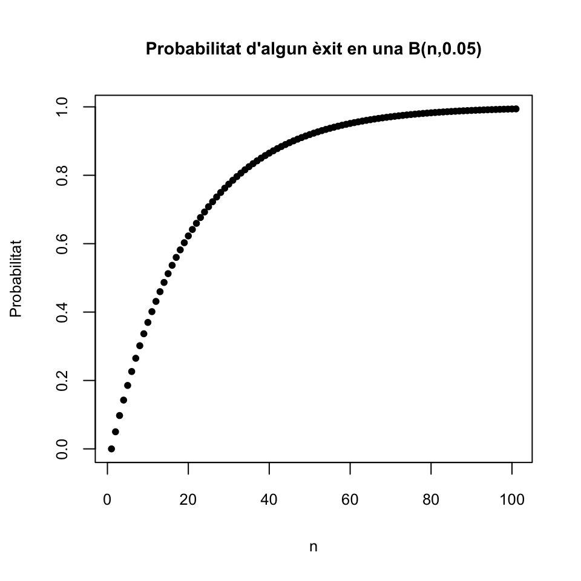
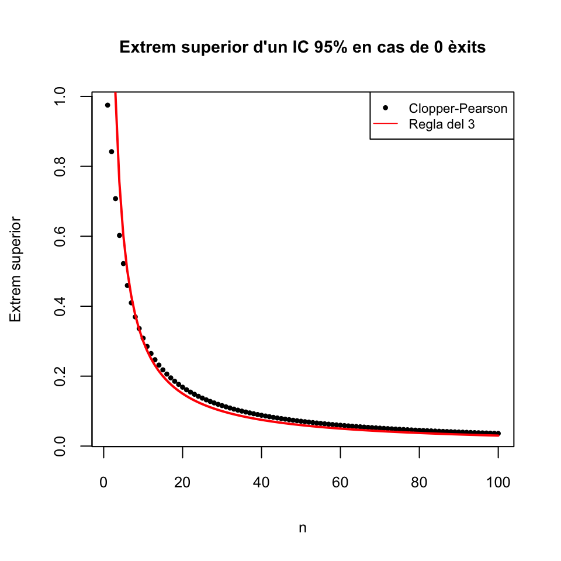
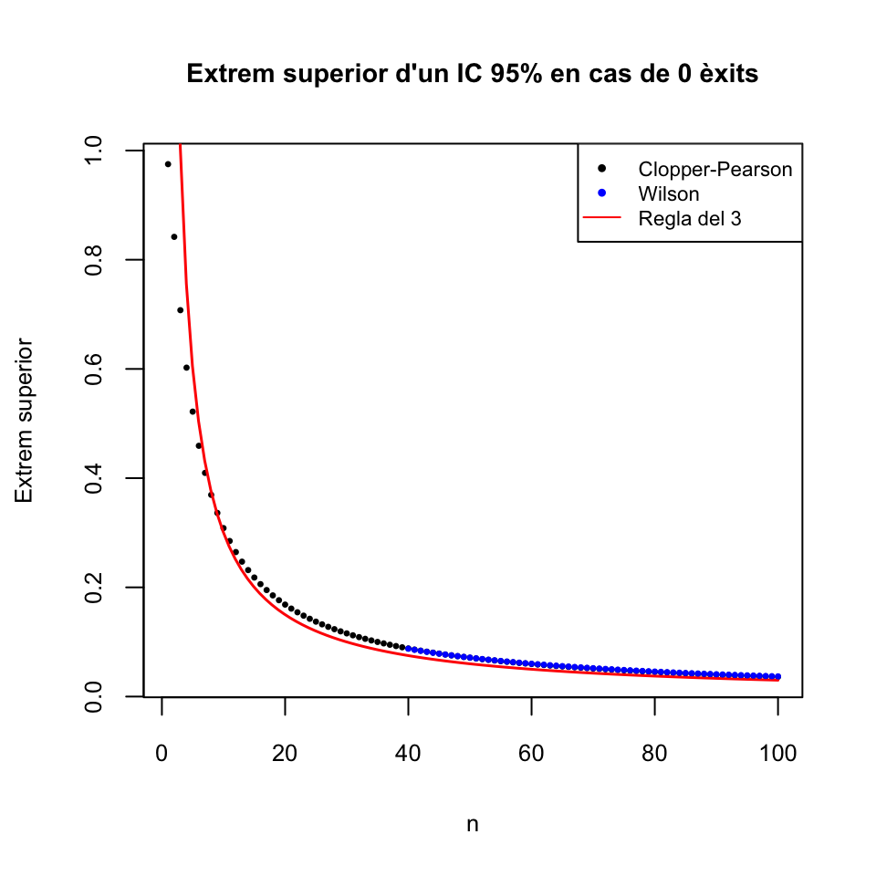
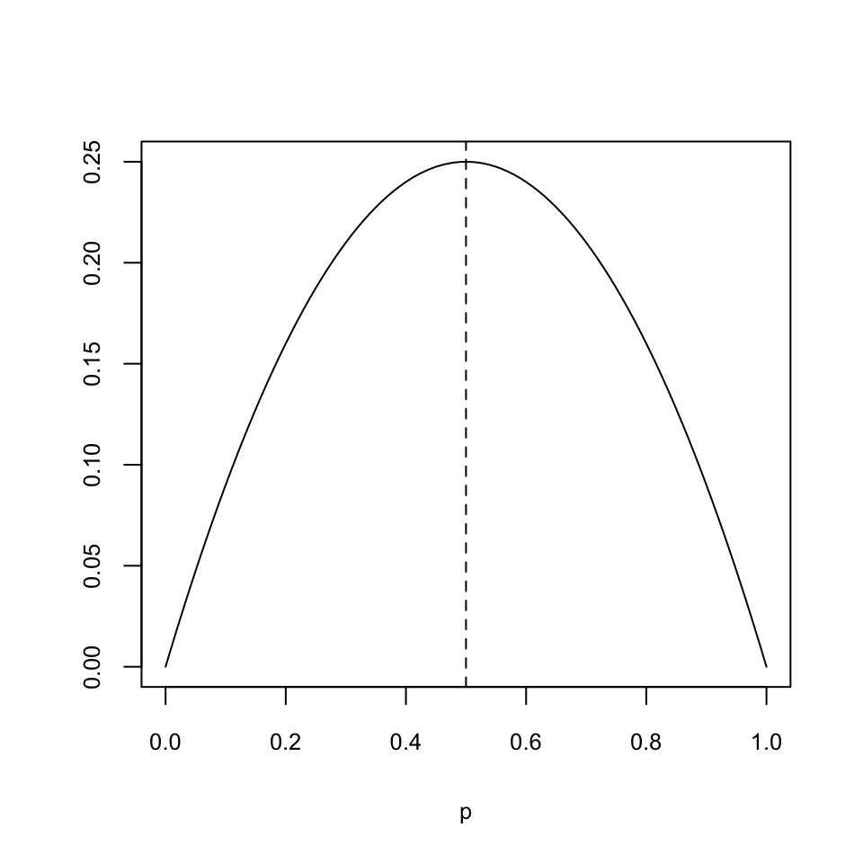

Tema 2 Intervals de confiança
2.1 Definicions bàsiques
Amb un estimador, estimam el paràmetre amb una certa precisió, que depèn:
De la variabilitat de la variable aleatòria d’interès
De la mida de la mostra
De la variabilitat de l’estimador (que segurament depèn de les dues anteriors)
Del nivell de confiança, o seguretat, de l’estimació: com de segurs volem estar que l’estimació és correcta

Un interval de confiança del q% (abreviadament, un IC q%) d’un paràmetre poblacional és un interval obtingut aplicant a una mostra aleatòria simple una fórmula que satisfà la propietat següent:
Tenir una confiança del q% significa doncs que empram una fórmula que encerta el q% de les vegades; o, per ser precisos, el q% de les vegades que l’aplicam bé. Però assumim que un (1-q)% de les vegades que l’aplicam ens equivocam, i no sabem quin és el nostre cas.
Exemple 2.1 En un experiment hem mesurat el percentatge d’augment d’alcohol en sang a 40 persones després de prendre 4 canyes de cervesa. La mitjana i la desviació típica mostral d’aquests percentatges d’increment han estat \(\overline{x}=41.2\) i \(\widetilde{s}=2.1\). Com veurem a l’Exemple 2.3, un IC 95% per al percentatge d’augment mitjà d’alcohol en sang d’una persona després de beure 4 canyes de cervesa és [40.53, 41.87].
Això significa que estam segurs al 95% que l’augment mitjà d’alcohol en sang d’una persona després de beure 4 canyes de cervesa està entre el 40.53% i el 41.87%, perquè aquest interval l’haurem calculat amb una fórmula que el 95% de les vegades que l’aplicam (bé) dóna un interval que conté la mitjana poblacional que volem estimar. Nosaltres som optimistes i “confiam” estar dins aquest 95% d’encerts.
No confongueu:
Interval de referència del q% per a una variable aleatòria: Interval que conté el valor de la variable aleatòria en un individu amb probabilitat q%.
Interval de confiança del q% per a un paràmetre: Interval que conté el valor poblacional del paràmetre de la variable aleatòria “amb probabilitat” q%, en el sentit que l’hem calculat amb una fórmula que dóna un interval que conté el paràmetre el q% de les vegades que l’aplicam a una mostra aleatòria.
- Interval de referència del q% per a un estimador: Interval que conté el valor de l’estimador sobre una mostra aleatòria amb probabilitat q%.
Per exemple:
Si diem que un interval de referència del 95% per a la concentració d’una proteïna en sèrum en individus sans mesurada en g/dl és [11,16], això significa significa que un 95% dels individus sans tenen una concentració d’aquesta proteïna en sèrum entre 11 i 16 g/dl, o, equivalentment, que un individu sa escollit a l’atzar té, amb un 95% de probabilitat, una concentració d’aquesta proteïna en sèrum entre 11 i 16 g/dl
Si diem que un interval de confiança del 95% per a la concentració mitjana d’una proteïna en sèrum en individus sans mesurada en g/dl és [11,16], això significa que hem pres una mostra aleatòria de concentracions d’aquesta proteïna en sèrum en individus sans i a partir d’aquesta mostra hem estimat que, amb un 95% de confiança, la concentració mitjana d’aquesta proteïna en sèrum en individus sans està entre 11 i 16 g/dl (i tenim un 95% de confiança en aquest interval perquè l’hem calculat amb una fórmula que dóna un interval que conté la mitjana poblacional un 95% de les vegades que l’empram).
Si diem que el 95% de les mostres de 100 concentracions d’una determinada proteïna en sèrum en individus sans tenen la mitjana mostral entre 11 i 16, això és un interval de referència del 95% per a la mitjana mostral de mostres de mida 100, no un interval de confiança per a la concentració mitjana poblacional ni un interval de referència per al valor de la concentració en un individu.
Que un IC q% per a un paràmetre \(\theta\) sigui \([a,b]\) serveix:
Per estimar \(\theta\) amb aquest marge de confiança: Estam bastant segurs que el valor poblacional de \(\theta\) està entre \(a\) i \(b\) (la fórmula emprada encerta sovint)
Per poder rebutjar un valor concret de \(\theta\) amb aquest marge de confiança: Estam bastant segurs que el valor real de \(\theta\) no està ni per sota de \(a\) ni per sobre de \(b\)
Per exemple: si un IC 95% per a la prevalència \(p\) d’una determinada característica en una població (la fracció d’individus que tenen aquesta característica) va de 0.025 a 0.047:
Estam molt (95%) segurs que \(p\in [0.025,0.047]\) (perquè la fórmula emprada per calcular aquest interval encerta en un 95% de les vegades)
Estam molt segurs que \(p>0.02\) (perquè tot l’interval on estam molt segurs que cau el valor real de \(p\) està a la dreta de 0.02)
Estam molt segurs que \(p\neq 0.05\) (perquè 0.05 no pertany a l’interval on estam molt segurs que cau el valor real de \(p\))
Però no estam molt segurs que \(p=0.03\), per molt que \(0.03\in [0.025,0.047]\): estam molt segurs que \(p\) està entre 0.025 i 0.047, però no tenim cap seguretat que valgui un valor concret entre aquests límits, només que està entre aquests límits.
Hi ha dos tipus de mètodes bàsics de càlcul d’IC a partir d’una mostra aleatòria:
Paramètrics: Usant alguna fórmula basada en la distribució mostral de l’estimador
Es basen en teoremes
Només serveixen si la variable aleatòria \(X\) i la mostra aleatòria satisfan (aproximadament) les hipòtesis del teorema
No paramètrics: El més emprat és el bootstrap:
De la mostra, es prenen a l’atzar moltes (~1000) mostres aleatòries simples de la mateixa mida que la mostra, es calcula l’estimador amb cada una d’aquestes mostres i s’usa el vector de resultats per estimar un IC (per exemple, podríem prendre com a IC 95% l’interval entre els quantils 0.025 i 0.975 d’aquest vector)
Es pot usar sempre (si la mostra és aleatòria)
Empra un procés aleatori: en cada execució sobre les mateixes dades pot donar un IC diferent
2.2 Exemple: Interval de confiança del 95% per a la mitjana d’una variable aleatòria normal
Suposem que tenim una variable normal \(X\sim N(\mu,\sigma)\). Volem trobar un IC 95% per a la seva mitjana \(\mu\). Per calcular-lo, prenem una mostra aleatòria simple de mida \(n\), de mitjana \(\overline{X}\) i variància mostral \(\widetilde{S}^2_X\).
Aleshores, sabem que \[ T=\frac{\overline{X}-\mu}{\widetilde{S}_{X}/\sqrt{n}} \] té distribució t de Student amb \(n-1\) graus de llibertat, \(t_{n-1}\).
Si podem trobar \(A,B\in \mathbb{R}\) tals que \[ P(A\leqslant T\leqslant B)=0.95, \] llavors: \[ \begin{array}{rl} 0.95 & =P\Bigg(A\leqslant\dfrac{\overline{X}-\mu}{\widetilde{S}_{X}/\sqrt{n}}\leqslant B\Bigg)\\[2ex] & =P\Bigg(A\cdot \dfrac{\widetilde{S}_X}{\sqrt{n}}\leqslant\overline{X}-\mu \leqslant B\cdot \dfrac{\widetilde{S}_X}{\sqrt{n}}\Bigg)\\[2ex] & =P\Bigg(-\overline{X}+A\cdot \dfrac{\widetilde{S}_X}{\sqrt{n}}\leqslant-\mu \leqslant-\overline{X}+B\cdot \dfrac{\widetilde{S}_X}{\sqrt{n}}\Bigg)\\[2ex] & =P\Bigg(\overline{X}-B\cdot \dfrac{\widetilde{S}_X}{\sqrt{n}}\leqslant\mu \leqslant\overline{X}-A\cdot \dfrac{\widetilde{S}_X}{\sqrt{n}}\Bigg) \end{array} \]
Com que \(P(A\leqslant T\leqslant B)=0.95\) significa que per al 95% de les mostres aleatòries simples de mida \(n\) el valor de \(T\) està entre \(A\) i \(B\), \[ P\Bigg(\overline{X}-B\cdot \frac{\widetilde{S}_X}{\sqrt{n}}\leqslant\mu \leqslant\overline{X}-A\cdot \frac{\widetilde{S}_X}{\sqrt{n}}\Bigg)=0.95 \] significa que per al 95% de les mostres aleatòries simples de mida \(n\) la \(\mu\) cau dins l’interval \[ \Bigg[\overline{X}-B\cdot \frac{\widetilde{S}_X}{\sqrt{n}},\ \overline{X}-A\cdot \frac{\widetilde{S}_X}{\sqrt{n}}\Bigg] \] Per tant, això serà un IC 95% per a \(\mu\).
Ens falta trobar els \(A,B\) tals que \(P(A\leqslant T\leqslant B)=0.95\). Per trobar-los, emprarem quantils de la distribució de \(T\). Recordem que si indicam amb \(t_{n-1,0.975}\) el 0.975-quantil d’una \(t_{n-1}\), per definició tenim que \[ P(T\leqslant t_{n-1,0.975})=0.975 \] i per la simetria de la \(t\), \[ P(T\leqslant-t_{n-1,0.975})=P(T\geqslant t_{n-1,0.975})=0.025 \] Per tant: \[ \begin{array}{l} P(-t_{n-1,0.975}\leqslant T\leqslant t_{n-1,0.975})\\ \quad =P(T\leqslant t_{n-1,0.975})-P(T\leqslant-t_{n-1,0.975})\\ \quad =0.975-0.025=0.95 \end{array} \]
Així doncs, podem prendre \[ A=-t_{n-1,0.975},\quad B=t_{n-1,0.975} \] i obtenim:
L’escriurem \[ \overline{X}\pm t_{n-1,0.975}\cdot \frac{\widetilde{S}_X}{\sqrt{n}} \]
Exemple 2.2 Fem un experiment per veure que, efectivament, aquesta fórmula “encerta”, en el sentit que conté la \(\mu\), al voltant del 95% de les vegades. Al bloc de codi següent: generam una Població de 107 “individus” que segueixen una llei normal estàndard i en calculam la mitjana mu; definim una funció IC que calcula l’IC 95% per a la mitjana \(\mu\) amb la fórmula anterior; prenem 200 mostres aleatòries simples de mida 50 de la nostra població i les aplicam aquesta funció, obtenint una matriu M de 200 columnes formades pels dos extrems dels intervals (l’inferior a la primera filera i el superior a la segona filera); finalment, miram quantes vegades hem encertat, és a dir, a quantes columnes de M la mitjana poblacional mu està entre l’entrada de la primera filera i la de la segona.
set.seed(42)
Poblacio=rnorm(10^7)
mu=mean(Poblacio)
IC=function(x){
n=length(x)
mean(x)+qt(0.975,n-1)*sd(x)/sqrt(n)*c(-1,1)}
M=replicate(200,IC(sample(Poblacio,50,replace=TRUE)))
Encerts=length(which(mu>=M[1,] & mu<=M[2,]))
Encerts## [1] 189Hem encertat 189 vegades, és a dir, un 94.5% de les vegades. És aproximadament el que esperàvem. Si ho provau amb altres llavors d’aleatorietat obtendreu altres resultats, de vegades millors, de vegades pitjors.
Per veure millor els encerts, dibuixam els intervals en un gràfic, on apareixeran en gris els que encerten i en vermell els que no encerten.
plot(1,type="n",xlim=c(-0.8,0.8),ylim=c(0,200),
xlab="Valors",ylab="Repeticions", main="200 IC 95%")
seg.int=function(i){color="grey";
if((mu<M[1,i]) | (mu>M[2,i])){color="red"}
segments(M[1,i],i,M[2,i],i,col=color,lwd=2)}
sapply(1:200,FUN=seg.int)
abline(v=mu,lwd=2)
Per exemple, de mitjana, un 5% de les vegades que calculam un IC 95%, el paràmetre poblacional no pertany a l’interval obtingut. Per tant, si calculam \(n\) IC 95% sobre mostres aleatòries simples independents, el nombre de vegades que l’interval resultant no contendrà el paràmetre poblacional seguirà una distribució binomial \(B(n,0.05)\). El gràfic següent dóna el valor de \(P(X\geqslant 1)\) per a una variable aleatòria \(X\) de tipus \(B(n,0.05)\), per a \(n=0,...,100\), i per tant la probabilitat que si calculam \(n\) IC 95% sobre mostres aleatòries simples independents, almenys un d’ells no contengui el paràmetre poblacional desitjat.
plot(1-dbinom(0,0:100,0.05),pch=20,xlab="n",ylab="Probabilitat",
main="Probabilitat d'algun èxit en una B(n,0.05)")
Tornant a l’IC 95% per a \(\mu\) d’una variable normal donat per la fórmula \[ \overline{X}\pm t_{n-1,0.975}\cdot \frac{\widetilde{S}_X}{\sqrt{n}} \] fixau-vos que:
Està centrat en \(\overline{X}\), per tant en cada càlcul estarà centrat en la mitjana mostral
Tal i com l’hem calculat, la probabilitat que \(\mu\) caigui fora d’aquest interval es reparteix per igual als dos costats: un 2.5% de les vegades la \(\mu\) poblacional estarà a l’esquerra de l’extrem inferior i un 2.5% de les vegades estarà a la dreta de l’extrem superior
Exemple 2.3 En un experiment hem mesurat el percentatge d’augment d’alcohol en sang a 40 persones després de prendre 4 canyes de cervesa. La mitjana i la desviació típica mostral d’aquests percentatges d’increment han estat \[ \overline{x}=41.2,\quad \widetilde{s}=2.1 \] Per calcular un IC 95% per al percentatge mitjà d’augment, suposarem que la mostra és aleatòria simple i que la variable aleatòria que dóna el percentatge d’augment d’alcohol en sang en una persona després de prendre 4 canyes de cervesa és normal.
Llavors, com que \(t_{n-1,0.975}\)=qt(0.975,39)=2.0227, un IC 95% és
\[
41.2\pm 2.0227\cdot \frac{2.1}{\sqrt{40}}\Rightarrow 41.2\pm 0.67\Rightarrow [40.53, 41.87]
\]
Hem suposat que la variable poblacional “Percentatge d’augment d’alcohol en sang després de prendre 4 canyes de cervesa” segueix una distribució normal. I si no fos normal?
En aquest cas, com que \(n=40\), és gran pel Teorema 2.2 de la propera secció l’interval obtingut segueix essent (aproximadament) un interval de confiança del 95% per a \(\mu\)
Si \(n\) fos petit i \(X\) molt diferent d’una normal, no es pot usar aquesta fórmula i cal buscar-se la vida (per exemple, emprar el mètode de bootstrap)
2.3 Interval de confiança per a la mitjana basat en la t de Student
A partir d’ara, per tal d’evitar ambigüitats, a les fórmules expressarem el nivell de confiança dels intervals en tant per u, no en tant per cent, i parlarem d’intervals de confiança de nivell de confiança \(q\), amb \(q\) entre 0 i 1, en lloc d’intervals de confiança del \(100q\%\). És a dir, per exemple, els intervals de confiança del 95% seran intervals de confiança de nivell de confiança 0.95.
La fórmula
El mateix argument que abans, canviant 0.95 per \(q\) dóna:
Fixau-vos que als IC 95%, \(q=0.95\) i per tant \((1+q)/2=1.95/2=0.975\).
Usant el Teorema Central del Límit i algunes aproximacions, tenim el següent resultat:
L’aproximació del teorema anterior és millor com més gran sigui \(n\) o com més propera a una normal sigui la variable poblacional \(X\).
En resum:Exemple 2.4 L’empresa RX-print ofereix una impressora de radiografies d’altíssima qualitat. En la seva publicitat afirma que els seus cartutxos imprimeixen una mitjana de 500 radiografies amb l’especificació:
Dades tècniques: Mostra de mida \(n=25\), població suposada normal, nivell de confiança del 90%
Uns radiòlegs desitgen comprovar aquestes afirmacions i prenen una mostra de cartutxos a l’atzar de mida \(n=25\), obtenint una mitjana de \(\overline{x}=518\) radiografies i una desviació típica mostral \(\widetilde{s}=39.9\).
Amb aquesta mostra, la mitjana poblacional anunciada pel fabricant cau dins l’interval de confiança del 90%?
La variable aleatòria d’interès és \(X\) és “Prenem un cartutxo d’aquesta empresa i miram el nombre de radiografies que permet imprimir”, de mitjana \(\mu\) per a la qual volem calcular un IC 90%. Suposarem que la variable \(X\) és normal, perquè l’empresa ho suposa a les dades tècniques. Per tant podem emprar la fórmula
\[
\overline{x}\pm t_{n-1,(q+1)/2} \frac{\widetilde{s}}{\sqrt{n}}
\]
on \(n=25\), \(\overline{x}=518\), \(\widetilde{s}=39.9\), \(q=0.9\), \((q+1)/2=0.95\) i \(t_{24,0.95}\)=qt(0.95,24)\(=1.71\).
Operant: \[ 518\pm 1.71\times \frac{39.9}{\sqrt{25}}\Rightarrow 518\pm 13.65\Rightarrow [504.35,531.65] \] No conté el 500 (en benefici del consumidor: tenim un 95% de seguretat que el nombre mitjà de radiografies per cartutxo està en realitat entre 504.35 i 531.65).
Exemple 2.5 A l’exemple anterior hem suposat que la variable aleatòria era normal. Què passaria si no ho fos?
Com que \(n=25\) no és prou gran, no podríem aplicar la fórmula de l’IC basada en la t de Student. Emprarem el mètode del bootstrap, per a la qual cosa necessitam tenir les dades originals, i no només els seus estadístics. Tenim aquestes dades en el vector Radios següent:
Radios=c(485,511,509,509,561,529,458,532,545,546,
503,577,547,477,507,548,480,444,461,573,
513,604,542,501,488)
mean(Radios)## [1] 518sd(Radios)## [1] 39.89987Prenem 5000 mostres aleatòries simples de mida 25 (la mateixa mida que el conjunt de dades original) de les dades i calculam la mitjana de cada mostra; fixam la llavor d’aleatorietat perquè el càlcul sigui reproduïble:
set.seed(100)
Simulacions=replicate(5000,mean(sample(Radios,25,rep=TRUE)))Ara prenem com a IC 90% l’interval que va del quantil 0.05 al quantil 0.95 d’aquest vector de mitjanes:
quantile(Simulacions,c(0.05,0.95))## 5% 95%
## 504.96 530.92Obtenim l’interval [504.96,530.92]: amb la fórmula basada en la t de Student, havíem obtingut l’interval [504.35,531.65].
Algunes consideracions
Observau que l’estructura de l’IC de nivell de confiança \(q\) per a \(\mu\) donat al Teorema 2.2 \[\begin{align} & \text{estimador}\nonumber\\ & \qquad \pm \frac{1+q}{2}\text{-quantil de la distr. mostral}\times \text{error típic de l'estimació} \tag{2.1} \end{align}\]
Aquesta estructura és molt típica (però, com veurem, no tots els IC paramètrics tenen aquesta forma) i satisfà que:
L’IC està centrat en el valor de l’estimador
La “probabilitat d’equivocar-se” es reparteix per igual als dos costats de l’interval: una fracció \(q/2\) de les vegades el paràmetre estarà a l’esquerra de l’extrem inferior i una fracció \(q/2\) de les vegades estarà a la dreta de l’extrem superior
A més, tenim que:
Per a una mateixa mostra i una mateixa fórmula (paramètrica) per calcular l’IC, si el nivell de confiança creix, l’IC s’eixampla
Això és general, per a tots els intervals de confiança paramètrics. La idea intuitiva és que, per estar més segurs que un interval conté un valor, l’interval ha de ser més ample. A un IC amb l’estructura (2.1), el motiu matemàtic és que si \(q\) creix, el quantil (1+\(q\))/2 de la distribució mostral creix.
Per exemple, a l’Exemple 2.3, teníem \(n=40\), \(\overline{x}=41.2\) i \(\widetilde{s}=2.1\):
L’IC 95% té \(q=0.95\), per tant \(t_{n-1,(1+q)/2}=t_{39,0.975}=2.02\), i donava \[ IC:\ 41.2\pm 2.02\cdot \frac{2.1}{\sqrt{40}}\Rightarrow 41.2\pm 0.67 \]
L’IC 99% té \(q=0.99\), per tant \(t_{n-1,(1+q)/2}=t_{39,0.995}=2.71\), i dóna \[ IC:\ 41.2\pm 2.71\cdot \frac{2.1}{\sqrt{40}}\Rightarrow 41.2\pm 0.9 \] més ample
Però si canviam de mostra (o de fórmula, si n’hi ha més d’una) per calcular l’IC, pot passar qualsevol cosa.
Amb R
La funció
t.test(X,conf.level=...)$conf.intcalcula l’interval de confiança basat en la t de Student per a la \(\mu\) de la variable aleatòria de la que el vector X n’és una mostra. El paràmetre conf.level permet especificar el nivell de confiança (en tant per u). El seu valor per defecte és 0.95, així que per calcular un IC 95% no cal especificar-lo.
Per exemple, l’IC 90% del vector de nombres de radiografies de l’Exemple 2.4 es calcularia amb
t.test(Radios,conf.level=0.9)$conf.int## [1] 504.3472 531.6528
## attr(,"conf.level")
## [1] 0.9Càlcul de la mida de la mostra per fixar l’error
Recordem que l’IC q% per a \(\mu\) basat en la t de Student \[ \overline{X}\pm t_{n-1,(1+q)/2}\cdot \frac{\widetilde{S}_X}{\sqrt{n}} \] és simètric i centrat en \(\overline{X}\). La seva amplada és la diferència entre els seus extrems \[ 2t_{n-1,(1+q)/2}\times \frac{\widetilde{S}_X}{\sqrt{n}} \]
El marge d’error (error, precisió) \(M\) en l’estimació de \(\mu\) per mitjà d’aquest IC é el que sumam i restam a \(\overline{X}\) per obtenir l’interval, és a dir, la meitat de la seva amplada: \[ M=t_{n-1,(1+q)/2}\times \frac{\widetilde{S}_X}{\sqrt{n}} \]
Una pregunta típica a l’hora de planejar un experiment és quina ha de ser la mida de la mostra que hem de prendre perquè el marge d’error sigui com a màxim un cert valor desitjat \(M_{max}\). És a dir, volem trobar la \(n\) més petita tal que \[ t_{n-1,(1+q)/2}\times \frac{\widetilde{S}_X}{\sqrt{n}}\leqslant M_{max}. \] Però fixau-vos que en aquesta desigualtat la \(n\) hi apareix al quantil i a l’error típic, i a més la \(\widetilde{S}_X\) depèn de la mostra. El que farem per respondre la pregunta serà fer algunes trampes:
Aproximarem la t de Student per una normal estàndard (ja que segurament la \(n\) haurà de ser gran): \[ t_{n-1,(1+q)/2}\rightsquigarrow z_{(1+q)/2} \]
Estimarem el valor de \(\widetilde{S}_X\) mitjançant la desviació típica mostral \(\widetilde{S}_0\) d’una prova pilot (una experiment anterior, realitzat per nosaltres o per qualcú altre amb una mostra petita)
D’aquesta manera, aproximam l’error \(M\) per mitjà de \[ M\approx z_{(1+q)/2}\times \frac{\widetilde{S}_0}{\sqrt{n}} \]
I ara si imposam que \(M\leqslant M_{max}\), ja podem aïllar la \(n\):
\[ z_{(1+q)/2}\times \frac{\widetilde{S}_0}{\sqrt{n}}\leqslant M_{max}\Longrightarrow n\geqslant\left(\frac{ z_{(1+q)/2}\cdot \widetilde{S}_0}{M_{max}} \right)^2 \]
En resum:
Teorema 2.3 Per estimar la \(\mu\) amb nivell de confiança \(q\) amb un marge d’error com a màxim \(M_{max}\) mitjançant la fórmula basada en la t de Student, prendrem una mostra de mida \(n \geqslant( z_{(1+q)/2}\cdot \widetilde{S}_0/M_{max})^2\), on \(\widetilde{S}_0\) és la desviació típica mostral obtinguda en una estimació anterior de \(\mu\) (en una prova pilot).
Naturalment, quan després prenguem una mostra de mida \(n\) calculada d’aquesta manera, pot passar qualsevol cosa, ja que hem emprat els resultats d’una mostra aleatòria per estimar la desviació típica d’una altra mostra i a més hem aproximat els quantils de la t de Student per els d’una normal estàndard, que són més petits. Però almenys haurem fet tot el que haurem pogut per fitar l’error dins el marge desitjat.
Exemple 2.6 A l’Exemple 2.3, hem emprat una mostra de \(n=40\) persones, amb \(\overline{x}=41.2\) i \(\widetilde{s}=2.1\), i l’error ha estat \[ t_{0.975,39}\cdot \frac{2.1}{\sqrt{40}}=0.67 \] Quin és el nombre mínim de persones que hauríem hagut d’emprar per obtenir un IC 95% amb un error de (com màxim) 0.5?
Empram l’exemple com a prova pilot: \[ n\geqslant\left(\frac{ z_{(1+q)/2}\cdot \widetilde{s}}{M_{max}} \right)^2= \left(\frac{1.96\cdot 2.1}{0.5} \right)^2=67.77 \]
El valor de \(n\) més petit que satisfà aquesta condició és 68, per tant aquest és el nombre mínim de persones que hauríem hagut d’emprar per esperar obtenir un IC 95% amb un error de (com màxim) 0.5.
2.4 Intervals de confiança per a proporcions
Suposem que tenim una variable Bernoulli \(X\) amb probabilitat d’èxit \(p_X\) desconeguda. Volem calcular un IC per a \(p_X\). Per fer-ho, prenem una mostra aleatòria simple de \(X\) de mida \(n\), amb nombre d’èxits \(x\) i per tant proporció mostral d’èxits \(\widehat{p}_{X}=x/n\)
Explicarem tres mètodes per calcular aquest IC:
El mètode exacte de Clopper-Pearson, que es pot aplicar sempre però sol donar intervals de confiança més amples del necessari.
El mètode aproximat de Wilson, que es pot emprar quan la mostra és gran, posem de mida 40 o més, i es basa en el fet que, pel Teorema Central del Límit, la proporció mostral de mostres aleatòries simples segueix una distribució aproximadament normal.
- El mètode aproximat de Laplace, que és una simplificació del mètode de Wilson, però només es pot emprar quan la mostra és bastant més gran, posem de mida 100 o més, i la proporció mostral \(\widehat{p}_{X}\) no és molt propera a 0 o a 1. És el mètode més clàssic i conegut.
Mètode “exacte” de Clopper-Pearson
Aquest mètode es basa en el fet que el nombre d’èxits \(x\) en mostres aleatòries simples de mida \(n\) de \(X\) segueix una distribució binomial \(B(n,p_X)\). Raonant de manera similar a com obteníem l’interval per a \(\mu\) basat en la t de Student (us estalviarem els detalls) arribam a la fórmula següent:
Teorema 2.4 Un IC de nivell de confiança \(q\) per a \(p_X\) és \([p_0,p_1]\), on
\(p_0\) és la solució de l’equació \[ \sum_{k=x}^n\binom{n}{k}p_0^k(1-p_0)^{n-k}= \frac{1-q}{2} \]
- \(p_1\) és la solució de l’equació \[ \sum_{k=0}^x\binom{n}{k}p_1^k(1-p_1)^{n-k}= \frac{1-q}{2} \]
Calcular a mà aquest interval és intractable, i en general dóna més ample del necessari (degut a la natura discreta de la distribució binomial, que només pren valors nombres naturals), però es pot emprar amb mostres aleatòries simples de qualsevol mida ja que empra que el nombre d’èxits \(x\) en mostres aleatòries simples de mida \(n\) de \(X\) segueix una distribució binomial i això sempre és veritat.
Per calcular-lo amb R, podeu emprar la funció del paquet epitools
binom.exact(x,n,conf.level=...)on xés el nombre d’èxits, n la mida de la mostra, i conf.level el nivell de confiança en tant per u, que per defecte val 0.95.
Exemple 2.7 De 10 pacients tractats amb un medicament, 2 s’han curat. Quin seria un IC 95% per a la proporció p de pacients que aquest medicament cura?
Emprarem el mètode de Clopper-Pearson
library(epitools)
round(binom.exact(2,10),3)## x n proportion lower upper conf.level
## 1 2 10 0.2 0.025 0.556 0.95Dóna [0.025,0.556].
L’interval de Clopper-Pearson té l’inconvenient que,en general, no està centrat en \(\widehat{p}_{X}\). Per exemple, el centre de l’interval anterior és \((0.025+0.556)/2= 0.29\), diferent de \(\widehat{p}_X=0.2\)
Mètode de Wilson
Suposem ara que prenem una mostra aleatòria simple de \(X\) de mida \(n\) gran (posem, de 40 o més subjectes) i proporció mostral d’èxits \(\widehat{p}_{X}\). En aquestes condicions, pel Teorema Central del Límit, \[ Z=\dfrac{\widehat{p}_{X}-p_X} {\sqrt{\frac{p_X(1-p_X)}{n}}}\approx N(0,1) \] Per tant \[ P\Big(-z_{(1+q)/2}\leqslant\dfrac{\widehat{p}_{X}-p_X} {\sqrt{\frac{p_X(1-p_X)}{n}}}\leqslant z_{(1+q)/2}\Big)=q \]
Aïllant \(p_X\) obtenim:
Amb R es calcula amb la funció
binom.wilson(x,n,conf.level=...)del paquet epitools, amb la mateixa sintaxi que binom.exact. Aquest interval també té l’inconvenient que, si us hi fixau, no està centrat en \(\widehat{p}_{X}\): el seu centre és \(\big(\widehat{p}_{X}+z_{(1+q)/{2}}^2/(2n)\big)/(1+z_{(1+q)/{2}}^2/{n})\).
Mètode de Laplace
Suposem finalment que prenem una mostra aleatòria simple de \(X\) de mida \(n\) més gran i \(\widehat{p}_{X}\) enfora de 0 i 1. Per fixar idees, suposem que \[ n\geqslant 100,\ n\widehat{p}_{X}\geqslant 10,\ n(1-\widehat{p}_{X})\geqslant 10 \] En aquest cas, a la fórmula de l’interval de Wilson podem suposar que els termes \(z_{(1+q)/{2}}^2/n\) són (aproximadament) 0 i obtenim la fórmula següent:
Amb R es calcula amb la funció
binom.approx(x,n,conf.level=...)del paquet epitools, amb la mateixa sintaxi que binom.exact. Aquesta fórmula és la més popular, amb més de 200 anys de rodatge.
Més exemples
Exemple 2.8 En una mostra aleatòria de 500 famílies amb nins en edat escolar es va trobar que 340 introduïen fruita de forma diària en la dieta dels seus fills. A partir d’aquestes dades, volem calcular un interval de confiança del 95% per a la proporció real de famílies d’aquesta ciutat amb nins en edat escolar que incorporen fruita fresca de forma diària en la dieta dels seus fills.
Diguem \(X\) a la variable aleatòria “Prenem una família amb nins en edat escolar i miram si inclou diàriament fruita a la dieta dels fills”. És Bernoulli, digem \(p_X\) a la seva probabilitat d’èxit: la probabilitat que una família amb nins en edat escolar inclogui diàriament fruita a la dieta dels fills. Cercam un interval de confiança del 95% per a \(p_X\)
Com que \(n=500\geqslant 100\), \(n\widehat{p}_X=340\geqslant 10\) i \(n(1-\widehat{p}_X)=160\geqslant 10\), podem emprar la fórmula de Laplace \[ \widehat{p}_{X}\pm z_{(q+1)/2}\sqrt{\frac{\widehat{p}_{X} (1-\widehat{p}_{X})}{n}} \] amb \(n=500\), \(\widehat{p}_{X}=340/500=0.68\) i \(z_{(q+1)/2}=z_{0.975}=1.96\). Dóna \[ 0.68\pm 1.96\sqrt{\frac{0.68(1-0.68)}{500}}\Rightarrow [0.639,0.721] \]
Amb R:
round(binom.approx(340,500), 3)## x n proportion lower upper conf.level
## 1 340 500 0.68 0.639 0.721 0.95Amb els altres mètodes, que també podríem aplicar en aquest cas, obtenim els intervals:
round(binom.exact(340,500),3)## x n proportion lower upper conf.level
## 1 340 500 0.68 0.637 0.721 0.95round(binom.wilson(340,500),3)## x n proportion lower upper conf.level
## 1 340 500 0.68 0.638 0.719 0.95Quan podem calcular més d’un interval per a \(p_X\), quin calculam?
D’entrada cal dir que si podem calcular més d’un interval, segurament donaran molt parescuts, com heu pogut comprovar a l’exemple anterior. Però en tot cas, si podeu triar, heu de tenir en compte que:
- L’interval de Clopper-Pearson és exacte, no empra cap aproximació, però:
- Tendeix a donar un interval més ample del necessari
- No està centrat en la proporció mostral
- Només és un interval “exacte” si la mostra és aleatòria simple, cosa que gairebé sempre serà fals (com a molt, serà “aproximadament” aleatòria simple)
- Com que fins fa poc no es podia calcular, no és molt popular
L’interval de Wilson és aproximat, fa servir l’aproximació a la normal donada pel Teorema Central del Límit. Això no és un gran emperò, pequè tanmateix segurament la mostra serà com a molt “aproximadament” aleatòria simple. Ara bé, tampoc no està centrat en la proporció mostral
- L’interval de Laplace és molt aproximat, però:
- Forma part de la cultura general del científic, tothom el coneix
- És l’únic centrat en la proporció mostral
Exemple 2.9 En un assaig d’un nou tractament de quimioteràpia, en una mostra de \(n\) malalts tractats, cap desenvolupà càncer testicular com a efecte secundari. Quin seria un interval de confiança al 95% per a la proporció de malalts tractats amb aquesta quimio que desenvolupen càncer testicular?
Per calcular-lo podem emprar el mètode de Clopper-Pearson, i si \(n\) és gran, podem emprar el mètode de Wilson. No podem emprar la fórmula de Laplace, perquè \(\widehat{p}_X=0\).
Pel que fa a Clopper-Pearson, aquest és un dels pocs casos que admeten solució analítica senzilla: dóna l’interval \[ \Big[0,1-\Big(\frac{1-q}{2}\Big)^{1/n}\Big] \] que, si \(q=0.95\), queda \[ [0,1-0.025^{1/n}]. \] Per exemple, si \(n=40\)
binom.exact(0,30)## x n proportion lower upper conf.level
## 1 0 30 0 0 0.1157033 0.951-0.025^(1/30)## [1] 0.1157033Si podem emprar el mètode de Wilson, la fórmula \[ \frac{\widehat{p}_{X}+\frac{z_{(q+1)/2}^2}{2n}\pm z_{(q+1)/2}\sqrt{\frac{\widehat{p}_{X}(1-\widehat{p}_{X})}{n}+\frac{z_{(q+1)/2}^2}{4n^2}}}{1+\frac{z_{(q+1)/2}^2}{n}} \] amb \(\widehat{p}_{X}=0\) i \(z_{(1+q)/2}=1.96\) dóna \[ \frac{\frac{1.96^2}{2n}\pm 1.96\sqrt{\frac{1.96^2}{4n^2}}}{1+\frac{1.96^2}{n}}\Longrightarrow \Big[0,\frac{1.96^2}{n+1.96^2}\Big]=\Big[0,\frac{3.84}{n+3.84}\Big] \] Per exemple, un altre cop amb \(n=40\)
binom.wilson(0,40)## x n proportion lower upper conf.level
## 1 0 40 0 6.330897e-18 0.0876216 0.95qnorm(0.975)^2/(40+qnorm(0.975)^2)## [1] 0.0876216Quan s’ha de calcular un interval de confiança del 95% per a una probabilitat \(p_X\) a partir d’una mostra aleatòria simple on no hi ha hagut cap èxit, sovint es fa servir la regla següent:
Regla del 3: Quan en una mostra aleatòria simple de mida \(n\) d’una variable aleatòria de Bernoulli de paràmetre \(p_X\) no hi trobam cap èxit, un IC 95% per a \(p_X\) va, aproximadament, de 0 a \(3/n\).
Amb aquesta regla, en el nostre exemple amb \(n=40\) obtendríem l’interval [0,3/40]=[0,0.075], no molt enfora del [0,0.088] que hem obtingut amb els altres dos mètodes.
Per veure com la regla del 3 aproxima l’interval de Clopper-Pearson, el gràfic següent mostra els valors \(3/n\) i l’extrem superior de l’IC 95% de Clopper-Pearson a partir d’una mostra de mida \(n\) amb 0 èxits:
f=function(n){binom.exact(0,n)$upper}
plot(1:100,sapply(1:100,f),pch=20,cex=0.7,xlab="n",ylab="Extrem superior",
main="Extrem superior d'un IC 95% en cas de 0 èxits")
curve(3/x,col="red",lwd=2,add=TRUE)
legend("topright",lty=c(NA,1),pch=c(20,NA),
legend=c("Clopper-Pearson","Regla del 3"),col=c("black","red"),cex=0.7)
El gràfic següent mostra els valors \(3/n\) i els extrems superiors dels IC 95% de Clopper-Pearson i de Wilson a partir d’una mostra de mida \(n\) (\(n\geqslant 40\) per als IC de Wilson) amb 0 èxits:
f=function(n){binom.exact(0,n)$upper}
plot(1:100,sapply(1:100,f),pch=20,cex=0.5,xlab="n",ylab="Extrem superior",
main="Extrem superior d'un IC 95% en cas de 0 èxits")
curve(3/x,col="red",lwd=1.5,add=TRUE)
points(40:100,3.84/(40:100+3.84),pch=20,cex=0.5,col="blue")
legend("topright",lty=c(NA,NA,1),pch=c(20,20,NA),
legend=c("Clopper-Pearson","Wilson","Regla del 3"),col=c("black","blue","red"),cex=0.7)
Els extrems superiors dels intervals de Clopper-Pearson i Wilson se superposen.
Exemple 2.10 En un assaig d’un tractament de quimioteràpia, en una mostra de 100 pacients tractats, 25 desenvoluparen càncer testicular secundari. Volem calcular un IC 95% per a la proporció de pacients tractats amb aquesta quimioteràpia que desenvolupen càncer testicular.
En aquest cas podem emprar els tres mètodes:
round(binom.exact(25,100),4)## x n proportion lower upper conf.level
## 1 25 100 0.25 0.1688 0.3466 0.95round(binom.wilson(25,100),4)## x n proportion lower upper conf.level
## 1 25 100 0.25 0.1755 0.343 0.95round(binom.approx(25,100),4)## x n proportion lower upper conf.level
## 1 25 100 0.25 0.1651 0.3349 0.95Càlcul de la mida de la mostra per a fixar l’error
L’error de l’interval de confiança de Laplace és \[ M= z_{(q+1)/2} \sqrt{\frac{\widehat{p}_{X} (1-\widehat{p}_{X})}{n}} \] No podem determinar la mida de la mostra a fi que l’interval de confiança tingui un error màxim sense conèixer \(\widehat{p}_{X}\), que no coneixem sense una mostra.
Però en el cas de l’interval de Laplace per a una proporció, podem donar un \(n\) que garanteixi una amplada màxima donada valgui el que valgui \(\widehat{p}_{X}\in [0,1]\).
Fixau-vos que la funció \(y=p (1-p)\), amb \(p\in [0,1]\), és una paràbola còncava amb vèrtex al punt \(p=0.5\)
curve(x*(1-x),xlim=c(0,1),xlab="p",ylab="")
abline(v=0.5,lty="dashed") Per tant, el seu màxim s’assoleix a \(p=0.5\). Així, doncs \[ \widehat{p}_{X} (1-\widehat{p}_{X})\leqslant 0.5(1-0.5)=0.5^2\text{ per a tot $\widehat{p}_X\in[0,1]$} \] i per tant \[ \begin{array}{l} \displaystyle M=z_{(q+1)/2} \sqrt{\frac{\widehat{p}_{X} (1-\widehat{p}_{X})}{n}}\\ \qquad\displaystyle \leqslant z_{(q+1)/2}\sqrt{\frac{0.5^2}{n}}=\frac{0.5z_{(q+1)/2}}{\sqrt{n}}=\frac{z_{(q+1)/2}}{2\sqrt{n}} \end{array} \]
D’aquesta manera, si \(n\) és tal que \[ \frac{z_{(q+1)/2}}{2\sqrt{n}}\leqslant M_{max} \] aleshores \(M\leqslant M_{max}\) segur, valgui el que valgui \(\widehat{p}_{X}\).
Per tant, el que farem serà calcular la \(n\) per obtenir un error com a màxim \(M_{max}\) en el cas més desfavorable: quan l’interval és el més ample possible, és a dir, suposant que \(\widehat{p}_{X}=0.5\): \[ M_{max}\geqslant\frac{z_{(q+1)/2}}{2\sqrt{n}} \Rightarrow n\geqslant\left(\frac{z_{(q+1)/2}}{2\cdot M_{max}}\right)^2 \]
En resum:
Teorema 2.7 Si \(n\geqslant\big(z_{(q+1)/2}/(2\cdot M_{max})\big)^2\), l’error de l’interval de Laplace calculat amb una mostra de mida \(n\) sempre serà com a molt \(M_{max}\).
Exemple 2.11 Quina és la mida més petita d’una mostra que ens garanteixi un error de com a màxim 0.05 en estimar una proporció \(p_X\) emprant un interval de confiança de Laplace del 95%?
Pel teorema anterior, per garantir un error de 0.05 en calcular un IC 95% per una proporció \(p_X\) emprant la fórmula de Laplace, hem d’emprar una mostra de mida \(n\) tal que \[ n\geqslant\Bigg(\frac{z_{(1+q)/2}}{2M_{max}}\Bigg)^2=\Bigg(\frac{1.96}{0.1}\Bigg)^2=384.16 \]
La mida més petita que satisfà aquesta condició és \(n=385\).
Observau tres coses:
El valor de \(n\) només depèn de la precisió i del nivell de confiança, no de la natura de l’estudi
Tal i com hem trobat la \(n\), estam segurs que si la mostra és com a mínim d’aquesta mida, l’interval de confiança de Laplace tendrà com a màxim una amplada \(2M_{max}\), sigui quina sigui la mostra. És de les poques vegades que podem estar segurs de qualque cosa en estadística.
El teorema anterio és per l’amplada de l’interval de Laplace, però la \(n\) segurament us sortirà molt gran i en aquest cas l’interval de Laplace sol aproximar molt bé els altres dos intervals.
2.5 Intervals de confiança per a la variància d’una variable normal
Suposem que tenim una variable normal \(X\sim N(\mu,\sigma)\). Volem trobar un IC 95% per a la seva variància \(\sigma^2\) (o la seva desviació típica \(\sigma\)). Per calcular-lo, prenem una mostra aleatòria simple de mida \(n\), de variància mostral \(\widetilde{S}^2_X\).
Recordau que, en aquestes condicions \[ \frac{(n-1) \widetilde{S}_{X}^2}{\sigma^2} \] té distribució \(\chi^2_{n-1}\)
Podem aprofitar aquest fet per obtenir intervals de confiança per a \(\sigma^2\):
\[ \left[ \frac{(n-1)\widetilde{S}_{X}^2}{\chi_{n-1,(1+q)/2}^2}, \frac{(n-1)\widetilde{S}_{X}^2}{\chi_{n-1,(1-q)/2}^2} \right], \] on \(\chi_{n-1,r}^2\) és el \(r\)-quantil de la distribució \(\chi_{n-1}^2\)
Fixau-vos que aquest interval de confiança per \(\sigma^2\) no està centrat en \(\widetilde{S}_{X}^2\). A més, com que \(\chi_{n-1}^2\) no és simètrica, s’han de calcularels dos quantils \(\chi_{n-1,(1-q)/2}^2\) i \(\chi_{n-1,(1+q)/2}^2\)
Exemple 2.12 Un índex de qualitat d’un reactiu químic és el temps que triga a actuar. L’estàndard és que aquest ha de ser \(\leqslant 30\) segons. Se suposa que la distribució del temps d’actuació del reactiu és aproximadament normal. Es realitzen 30 proves en les quals es mesura el temps d’actuació del reactiu. Tenim els resultats guardats en el vector següent:
Temps=c(12,13,13,14,14,14,15,15,16,17,17,18,18,19,19,25,25,26,27,30,33,34,35,40,40,51,51,58,59,83)Volem calcular un interval de confiança per a la desviació típica \(\sigma\) d’aquest temps d’actuació, amb nivell de confiança 95%. Com que la variable que ens dóna el temps és (aproximadament) normal, podem emprar la fórmula per a l’IC del 95% per a \(\sigma^2\) anterior: \[ \left[ \frac{(n-1)\widetilde{S}_{X}^2}{\chi_{n-1,(1+q)/2}^2}, \frac{(n-1)\widetilde{S}_{X}^2}{\chi_{n-1,(1-q)/2}^2} \right] \]
on:
- \(n=\)
length(Temps)\(=30\) - \(\widetilde{S}_X^2=\)
var(Temps)\(=301.5505747\) - \(q=0.95\), per tant \(\chi_{n-1,(1+q)/2}^2=\)
qchisq(0.975,29)\(=45.7222858\) i \(\chi_{n-1,(1-q)/2}^2=\)qchisq(0.025,29)\(=16.0470717\)
Obtenim l’interval: \[ \left[ \frac{29\cdot 301.55}{45.72}, \frac{29\cdot 301.55}{16.05}\right]= [191.26, 544.96] \]
Però aquest interval és per a la variància. Per obtenir un IC per a la desviació típica, prenem arrels quadrades dels extrems: \[ [\sqrt{191.26}, \sqrt{544.96}]=[13.83,23.34] \]
2.6 “Poblacions finites”
Fins ara hem emprat mostres aleatòries simples. Què passa si prenem mostres aleatòries sense reposició?
Si la mida \(N\) de la població és molt més gran que la mida \(n\) de la mostra (posem \(N\geqslant 1000n\)), les fórmules donades fins ara funcionen (aproximadament) bé.
Quan la mida \(N\) de la població no és molt més gran que la mida \(n\) de la mostra, el que es fa és, a les fórmules que hem donat per als intervals de confiança per a \(\mu\) o \(p_X\), multiplicar-hi l’error estàndard pel factor de població finita \[ \sqrt{\frac{N-n}{N-1}} \]
Així:
Si \(X\) és una població de mida \(N\) amb mitjana poblacional \(\mu\) i prenem una mostra aleatòria sense reposició de \(X\), amb mitjana \(\overline{X}\) i desviació típica mostral \(\widetilde{S}_X\), i si \(X\) normal o si \(n\) és gran, es recomana prendre com a IC de nivell de confiança \(q\) per a \(\mu\) \[ \overline{X}\pm t_{n,(q+1)/2}\frac{\widetilde{S}_X}{\sqrt{n}}\sqrt{\frac{\vphantom{(}N-n}{N-1}} \]
Si \(X\) una població de mida \(N\) que segueix una distribució Bernoulli amb probabilitat d’èxit \(p_X\) i prenem una mostra aleatòria sense reposició de \(X\), amb \(n\) molt gran i nombres d’èxits i fracassos com a mínim 10, es recomana prendre com a IC de nivell de confiança \(q\) per a \(p_X\) \[ \widehat{p}_{X}\pm z_{(q+1)/2}\sqrt{\frac{\widehat{p}_{X} (1-\widehat{p}_{X})}{n}}\sqrt{\frac{\vphantom{(}N-n}{N-1}} \]
En les condicions del punt anterior, per obtenir un IC de nivell de confiança \(q\) per a \(p_X\) amb un marge d’error \(M_{max}\) en el cas més desfavorable caldrà prendre una mostra de mida \[ n\geqslant\frac{Nz_{(q+1)/2}^2}{4M_{max}^2(N-1)+z_{(q+1)/2}^2} \]
Exemple 2.13 En una mostra aleatòria de 727 estudiants (diferents) de la UIB (\(N=12000\)), 557 afirmàrem haver comès plagi en algun treball durant els seus estudis. Quin seria un interval de confiança del 95% per a la proporció \(p_X\) d’estudiants de la UIB que han comès plagi en algun treball?
Una mostra de 727 estudiants diferents és molt gran respecte del total d’estudiants de la UIB, per la qual cosa convé emprar la fórmula de Laplace amb el factor de població finita \[ \widehat{p}_{X}\pm z_{(q+1)/2}\sqrt{\frac{\widehat{p}_{X} (1-\widehat{p}_{X})}{n}}\sqrt{\frac{\vphantom{(}N-n}{N-1}} \] on \(\widehat{p}_{X}=557/727=0.766\), \(z_{(q+1)/2}=1.96\), \(n=727\) i \(N=12000\): dóna \[ 0.766\pm \sqrt{\frac{0.766(1-0.766)}{727}}\sqrt{\frac{\vphantom{(}12000-727}{12000-1}}\Rightarrow [0.751,0.781] \] Estimam amb un nivell de confiança del 95% que entre un 75.1 i un 78.1 dels estudiants de la UIB han comès plagi en algun treball.
Per la fórmula anterior (prenent \(N=12000\) i \(z_{(1+q)/2}=1.96\)), per garantir un marge d’error màxim de 0.05 cal prendre una mostra de mida \[ n\geqslant\frac{12000\cdot 1.96^2}{4\cdot 0.05^2(12000-1)+1.96^2}=372.3 \] Per tant, ens calen 373 estudiants.